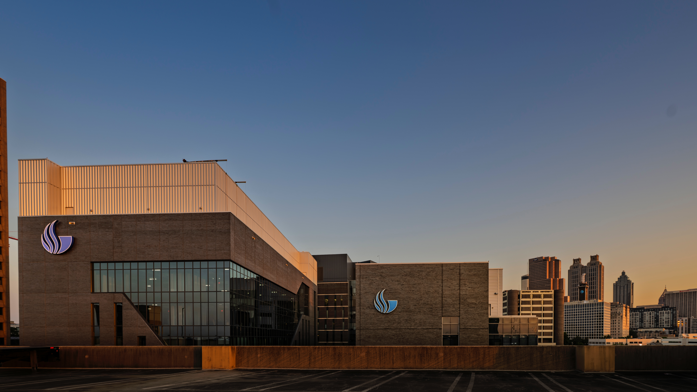
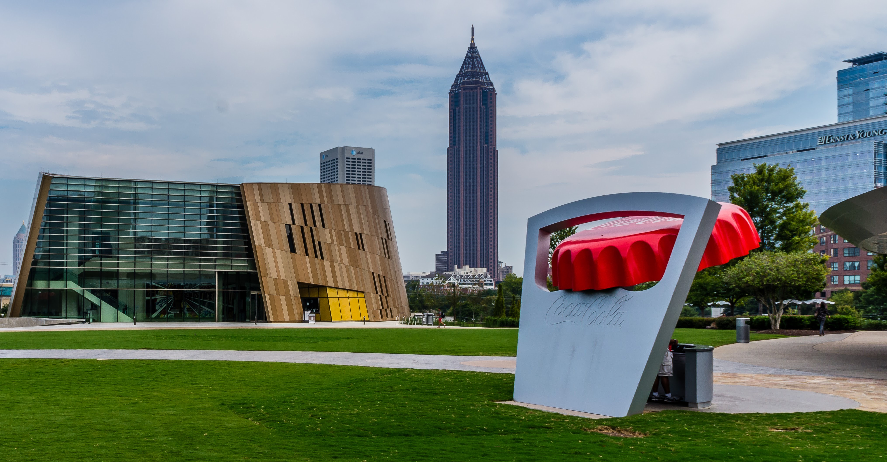
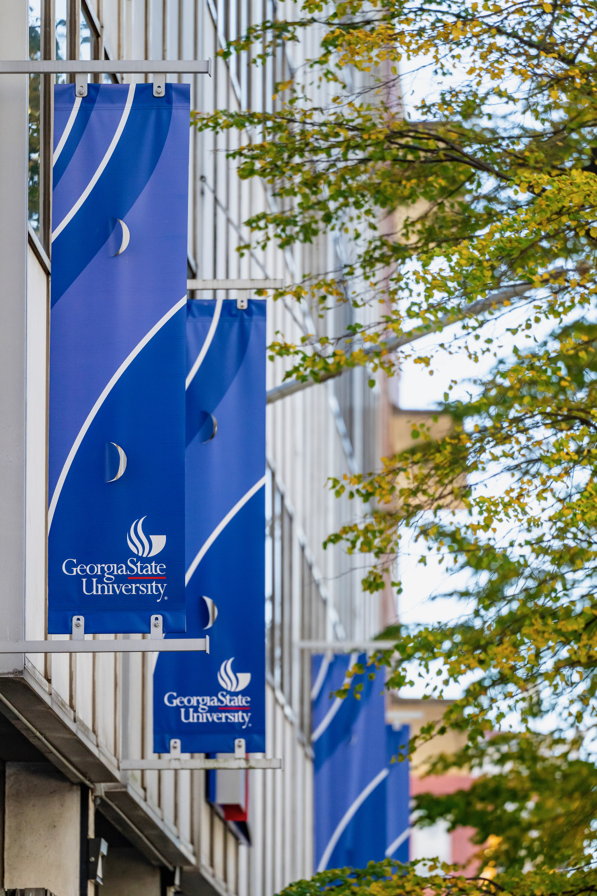
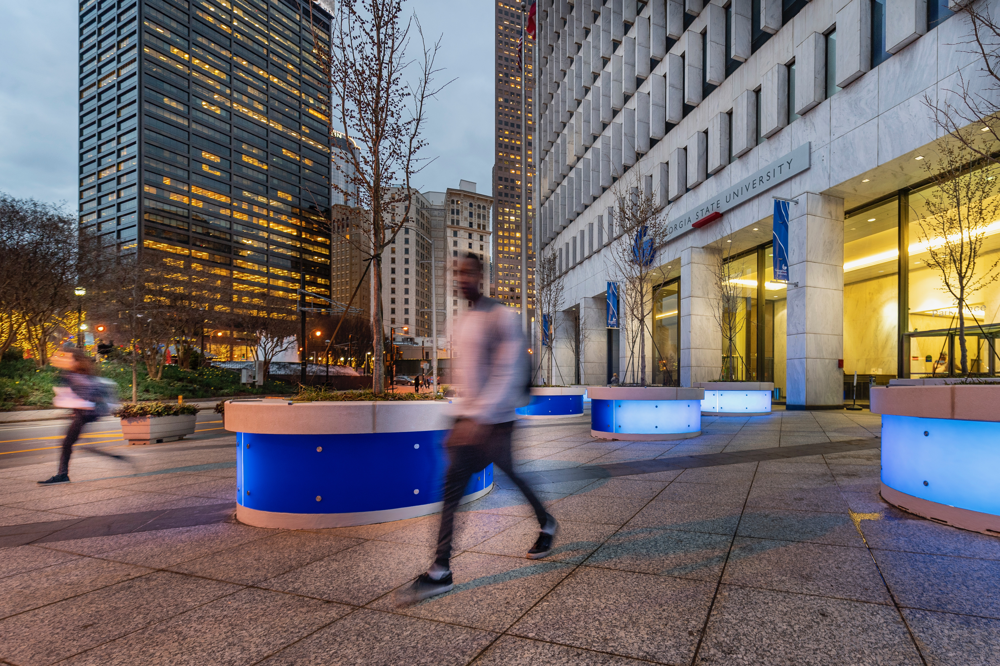
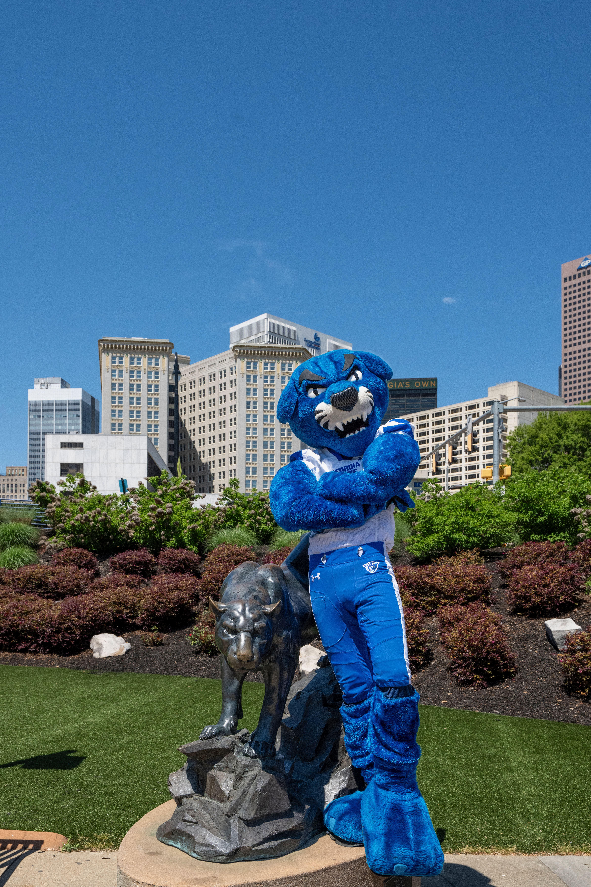

Current Research
Our current main project, Project READ, studies emergent literacy in autistic children, alongside the broader research interests that shape our work on communication, literacy, and executive function.

How We Approach Research
Each area listed here represents a line of inquiry the lab is actively developing or has studied in prior work. Our research is shaped by questions that families, educators, and clinicians ask regularly about children's development. We look for findings that translate into practical support strategies.
Studies are described in plain language. Where specific project details are not yet confirmed, a status note is included. Families interested in future studies can join our participant registry through the contact page.
Project READ: Receptive and Expressive Assessment of Narrative Discourse in Autism
We are interested in learning more about emergent literacy skills in autistic children in the early school years (5–8 years old; K–3rd grade) and how shared book reading practices at home may facilitate their storytelling and reading comprehension skills.
What you do: join one remote session over Zoom with your autistic child at home and complete several surveys at your convenience.
Compensation: up to $50 Amazon e-gift card per autistic child participant.
Participate in this researchOther Research Interests
Alongside Project READ, the lab pursues several connected lines of inquiry into how children develop communication, literacy, and executive function skills.

Autism & Neurodiversity
A significant portion of our work focuses on children with autism and other neurodevelopmental differences. We study the cognitive profiles, communication patterns, and language skills unique to these children, using a strengths-based approach that looks for what children can do alongside where they may need support.
We use behavioral observation, parent-report measures, and language sampling to build a more complete picture of how these children learn and communicate.
Participant informationExecutive Function & Communication
Skills like attention, working memory, and cognitive flexibility play a role in communication and language learning that often goes unrecognized. We study how these executive function skills interact with communication outcomes in children with autism and children with developmental language differences.
This work helps clarify the relationship between cognitive regulation and communication, with practical implications for school and home settings.
Contact the lab about this area

Literacy & Reading
We investigate how phonological awareness, decoding, and reading comprehension develop in children with autism and language-diverse learners. Literacy outcomes in these groups are often shaped by factors that go beyond standard reading instruction.
Our goal is to identify both the challenges and strengths children bring to early literacy learning and to inform more effective classroom and intervention approaches.
Participant informationFamily-Centered Research
Families are not just participants in our research. They shape how we design studies and how we understand our findings. We study how family dynamics, caregiver strategies, and home language environments contribute to children's communication and literacy outcomes.
Our studies are designed to be accessible and to generate findings that are useful to families, not just academic audiences.
Contact the lab about this area

Early Intervention
Early childhood is a critical window for language and communication development. We focus on translating research into play-based and language-rich strategies that can be used in preschool and home settings to support children who may be at risk for communication differences.
This work connects directly to families by providing practical, evidence-informed guidance for early childhood environments.
Participant information